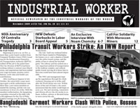

Submitted on Wed, 12/23/2009 - 11:36pm
On December 8th, FW Vale Ray Jessop died in an industrial accident, while at work. Below is one obituary for the Fellow Worker, and a link to an article about the accident.
On the 6th December Fellow Worker Ray Jessop of Hull was killed in a workplace accident. Enquiries are continuing into the circumstances of Ray's death, but evidence is emerging that the cost-cutting policies of his employer, Kier, played a large part. It will be some time before a formal inquest takes place, but I have heard that UCATT, of which Ray was a member, is seriously considering making a case for a corporate manslaughter prosecution.
Although Ray was not well known in the OBU he was a loyal member and supporter of our union which he joined in 2002. He was not a passive member of UCATT and spoke out against managerial abuses. Workmates had tried to persuade him to take the shop steward's position, but he declined as he did not feel that he was the right person for that task.
Submitted on Sat, 12/19/2009 - 1:22am

FOR IMMEDIATE RELEASE
IWW Starbucks Workers Union (Industrial Workers of the World)
Contact: Michele Cahill, 817-368-5892
December 18, 2009
Steamed
Baristas Shut Down Fort Worth Starbucks Drive-Thru to Demand Affordable
Healthcare and Paid Sick Days for those Diagnosed with H1N1
Press Conference: December 18, 12:00 noon, 8th and W. Rosedale Starbucks, Fort Worth
Fort
Worth, TX- Baristas and community supporters at the 8th and Rosedale
Starbucks shut down the store’s drive-thru this morning and delivered a
list of demands including affordable health care options and sick days
for those displaying H1N1 or other cold and flu symptoms. Starbucks
doubled the cost of the company health insurance plan in September,
leaving many workers unable to afford treatment because of sky-high
deductibles and premiums.
Submitted on Tue, 12/01/2009 - 7:40pm
Why We Occupied Senator Levin’s Office
Today, we occupied Senator Carl Levin’s office in Grand Rapids as a protest against the current administration’s decision to escalate the US war in Afghanistan. We do this not simply because we are against war, but because this decision by the Obama administration is unjust.
The US is not in Afghanistan to bring Democracy – Since 1979, the US has supported anti-democratic forces such as the Mujahadeen, the Northern Alliance, the Taliban and a variety of individual warlords. The US has also supported the current regime of Karzai, knowing full well that his administration has been corrupt from the beginning.
Submitted on Sun, 11/29/2009 - 12:04pm

Headlines:
- Philadelphia Transit Workers Strike
- London “Posties” Strike Against Privatization
- IWW Commemorates Centralia Tragedy
Features:
- An Exclusive Interview With Noam Chomsky
- Review: Working Class Analysis Of The Tourism Industry
- Solidarity With Moroccan Miners
Download a free PDF Copy.
Submitted on Thu, 11/26/2009 - 12:29am
November 25, 8am: Workers along with members of the NYC-GMB march to Flaum, a kosher food distributor in Brooklyn, after a Labor Board ruling which ordered the boss to reinstate the workers with back pay. Instead, the boss wrongfully demanded that the workers reauthorize their immigration status and denied them their right to return to work.
The workers had been illegally fired for engaging in a work stoppage over the right to form a labor union and payment in accordance with the law.